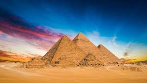

Descripcion Principal
La Gran Pirámide de Guiza (también conocida como pirámide de Keops o de Jufu) es, además de la mayor de las pirámides de Egipto, la más antigua de las siete maravillas del mundo antiguo y la única que todavía perdura. Fue ordenada a construir por el faraón Keops de la cuarta dinastía del Antiguo Egipto. Acerca del arquitecto de dicha obra, algunos estudiosos nombran a Hemiunu, pero no está comprobado. Patrimonio de la Humanidad de la Unesco Menfis y su necrópolis - Zonas de las pirámides desde Guiza hasta Dahshur ubicada en EgiptoMenfis y su necrópolis - Zonas de las pirámides desde Guiza hasta DahshurMenfis y su necrópolis - Zonas de las pirámides desde Guiza hasta Dahshur Ubicación en Egipto. País Flag of Egypt.svg Egipto Datos generales Tipo Cultural Criterios i, iii, vi Identificación 86 Región Estados árabes Inscripción 1979 (III sesión) [editar datos en Wikidata] La fecha estimada de terminación de la construcción de la Gran Pirámide es alrededor del 2600 a. C., siendo la primera y mayor de las tres grandes pirámides de la necrópolis de Guiza, situada en las afueras de El Cairo, a 20 km al noroeste de Menfis, la antigua capital de Egipto. Fue el edificio más alto de la Tierra durante 3800 años,2 hasta que en el siglo xiv fue superado por el chapitel de la catedral de Lincoln, en Inglaterra,nota 1 y el edificio de piedra más alto del mundo hasta bien entrado el siglo XIX, siendo entonces superado por la aguja de la iglesia de San Nicolás, en Hamburgo.Nota 1
La pirámide
La necrópolis piramidal de Khufu fue erigida en la sección noreste de la meseta de Guiza. Es posible que la falta de espacio para la gran construcción planeada, la falta de canteras locales de piedra caliza y el terreno suelto de Dahshur obligara a Khufu a trasladarse hacia el norte, lejos de la necrópolis de su predecesor Seneferu. Khufu eligió el extremo superior de una meseta natural para que su futura pirámide fuera ampliamente visible. Decidió llamar a su complejo funerario Akhet Khufu (El Horizonte de Khufu).3 Se estima que fue construida con unos 2,3 millones de bloques de piedra,4 cuyo peso medio es de dos toneladas y media por bloque, aunque hay algunos de ellos que llegan a pesar hasta sesenta toneladas. Originalmente estaba recubierta por unos 27 000 bloques de piedra caliza blanca, pulidos, de varias toneladas cada uno. Mantuvo este aspecto hasta principios del siglo xiv, cuando un terremoto desprendió parte del revestimiento calizo. Posteriormente, los turcos otomanos utilizaron dicho revestimiento para la construcción de diversas edificaciones en El Cairo. Tiene una altura de 146.5 metros (481 pies) desde el nivel del suelo hasta el punto más alto. El nivel de enterramiento de la Gran Pirámide de Giza es de aproximadamente 10 metros (33 pies). Esto significa que la parte enterrada se extiende aproximadamente 10 metros por debajo del nivel del suelo.
DATOS ADICIONALES
PIRAMIDE DE GUIZA
GUIZA
Guiza es una ciudad egipcia que queda al oeste del Nilo, cerca de El Cairo. La meseta de Guiza alberga monumentos egipcios emblemáticos, que incluyen tres altas pirámides que se construyeron como mausoleos reales cerca del siglo XXVI a. C
Ubicacion
El interior de la pirámide
La pirámide se compone de tres cámaras principales, dos situadas en el interior de la pirámide, actualmente denominadas cámara del rey y cámara de la reina, y una en el subsuelo, la cámara subterránea. A las cámaras se accedía desde el lado norte, por un pasaje descendente, obstruido al final por grandes bloques de granito, que comunicaba con dos pasadizos, uno ascendente, que desemboca en la Gran Galería, y otro descendente, que llega hasta la cámara subterránea